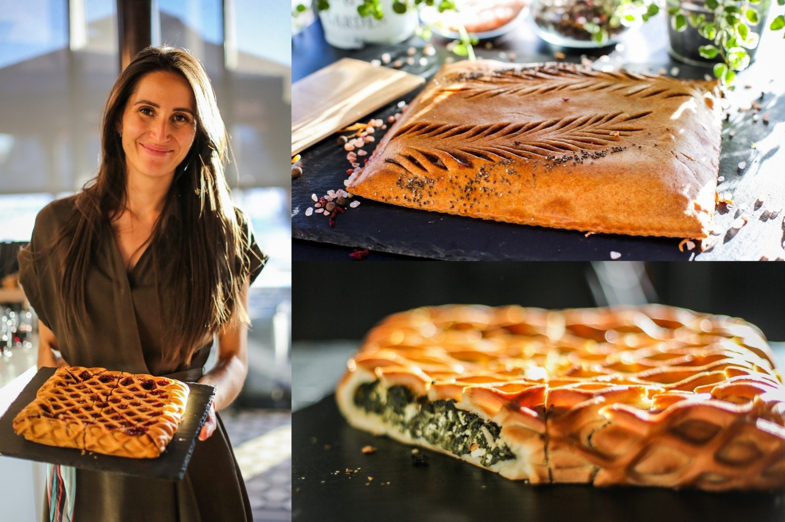

Pyragai greitukai - 38 skanėstai, kuriuos pašausite į orkaitę per keliolika minučių | La Maistas
2020.10.29 13:34
TV IDĖJOS RECEPTAI KONKURSAI RECEPTAI PAGAL TIPĄ Helovinas Valgome sveikiau! Grilio patiekalai Apkepai Blynai, sklindžiai Desertai Gėrimai Gėrimai su alkoholiu Karšti patiekalai Uogienės Konservuoti patiekalai Košės, tyrės Kremai ir padažai Picos Pyragai, kepiniai Salotos, mišrainės Sriubos Sumuštiniai Troškiniai Užkandžiai Vaikams Vegetariški Be glitimo Traškūs žiedinio kopūsto kepsneliai Tobulas moliūginis sūrio tortas Atsiųsk savo receptą
Pyragai greitukai - 38 skanėstai, kuriuos pašausite į orkaitę per keliolika minučių
AUTORIUS: LaMaistas.lt, 2020-03-17 @ ShutterstockTikriausiai daugelis mėgsta skanutėlius pyragus, tortus, sausainius ir pyragaičius, o dar geriau, kai jiems paruošti nereikia daug laiko!
Atrinkome net 38 nuostabius skanėstus, kurių paruošimui reikia vos keliolikos minučių, pašauti į orkaitę ir trupučio kantrybės, kol iškeps. Skanių eksperimentų!
Šakočio skonio keksas
Tikriausiai daugelis smaližių mėgsta šakotį, tačiau nedaugelis išdrįsta jį pasigaminti namuose. Siūlome paprastesnį variantą - išsikepti keksą, kuris skonis maloniai primena šakotį. Skanus ir šiltas, ir atvėsęs!
Receptą rasite čia. Nuotrauka Ⓒ @Shutterstock Greitas obuolių pyragas - vienas skaniausių ragautų
Ypatingai drėgnas obuolių pyragas, kuris tikrai yra vienas skaniausių mūsų ragautų obuolių pyragų. Atvėsusį jį barstome cukraus pudra - taip jis bus dar skanesnis. Kepant pyragą visi namai prisipildys rudeniškų kvapų!
Receptą rasite čia. Nuotrauka Ⓒ Andželika Be galo greitas ir skanus pyragas su šaldytomis uogomis
Labai greitas ir paprastas pyragas visiems, kas turi šaldytų ar šviežių uogų, jos čia taip pat labai tinka! Pyragas labai originalaus, neįprasto ir gardaus skonio - tešla primena ir paprastą biskvitą, ir drėgno kekso skonį. Siūlome išbandyti!
Receptą rasite čia. Nuotrauka Ⓒ Jurgitos receptai Sviestinis obuolių pyragas - mano pats pačiausias!
Ypatingas sviestinis obuolių pyragas! Drėgnas ir labai skanus! Skoniui paįvairinti galima įtarkuoti apelsino ar citrinos žievelės, įmaišyti riešutų ar razinų.
Receptą rasite čia. Paprastas uogienės pyragas
Labai paprastas, greitai paruošiamas, jokių įmantrių ingredientų nereikalaujantis pyragas. Jam net nereikia sluoksniuoti uogienės, ji tiesiog įmaišoma į tešlą!
Receptą rasite čia. Nuotrauka Ⓒ Nuotrauka LaMaistas.lt redakcijos Purus bananų pyragas
Labai skanus, purus ir drėgnas pyragas. Drėgnas išlieka porą dienų po kepimo. Cukraus kiekį galite koreguoti savo nuožiūra ar net nedėti visai, jeigu pakanka saldumo nuo bananų. Dar tinka įdėti riešutų, ypač graikinių, kokoso drožlių ar aguonų. Improvizuokite drąsiai!
Receptą rasite čia. Nuotrauka Ⓒ LaMaistas.lt Angliškas keksas-pyragas - aromatingas ir labai skanus!
Labai skanus, kvapnus ir sodraus skonio. Labai tinka su džiovintomis slyvomis, vynuogėmis (net rūgštesnėmis iš lietuviško sodo), avietėmis. Pyragas tiesiog akimirksniu po gabalėlį išgaruoja nuo stalo!
Receptą rasite čia. Nuotrauka Ⓒ Jolanta, Visko po trupinėlį Greitas kokosų pyragas - drėgnas ir labai skanus!
Labai skanus, drėgnas ir kvapnus pyragas smaližiams. O geriausia, kad paruošti jį labai paprasta ir tikrai neužtruks!Gabalėlis po gabalėlio iš virtuvės jis išgaruoja labai greitai.
Receptą rasite čia. Nuotrauka Ⓒ @Shutterstock Minkštas obuolių pyragas
Greitai paruošiamas, reikės tik išmaišyti kelis ingredientus ir pašauti į orkaitę. Labai skanu dar šiltas su ledais ar plakta grietinėle, pabarsčius cinamonu ar cukraus pudra.
Receptą rasite čia. Nuotrauka Ⓒ @Shutterstock Greitas trupininis varškės pyragas
Šio pyrago pasiruošimas užtruks iki 10 minučių, reikės tik palaukti, kol iškeps! Jis labai skanus, o tešla ypatingai paprastai paruošiama. Jeigu norisi, ant varškės sluoksnio papildomai galima dėti tirštesnės uogienės.
Receptą rasite čia. Nuotrauka Ⓒ @Shutterstock Purus ir drėgnas morkų pyragas
Ar kada esate ragavę morkų pyrago? Jei dar ne, siūlome išbandyti šį nuostabų receptą! Pyragą pagaminsite labai greitai, o jo skonis maloniai nustebins. Pyragas minkštas ir drėgnas, kiekvienas gabalėlis tiesiog tirpsta burnoje.
Receptą rasite čia. Nuotrauka Ⓒ @Shutterstock Greitas varškės ir obuolių pyragas su manais
Nesudėtingai paruošiamas, bet išskirtinai dailus pyragas su obuoliais. Beje, taip ruošti jį galima ir su kriaušėmis ar net konservuotais persikais. Skanaus!
Receptą rasite čia. Nuotrauka Ⓒ Odeta, Samčio užrašai Skanusis varškės keksas
Nesudėtingai paruošiamas, minkštas ir purus varškės keksas. Į tešlą galite įmaišyti mėgstamų uogų - tiks net šaldytos, tik jas reikėtų prieš tai atitirpinti ir nupilti skystį.
Receptą rasite čia. Nuotrauka Ⓒ @Shutterstock Grietininis kriaušių pyragas
Rudenėjantys vakarai kvepia ne tik obuolių, bet ir kriaušių pyragais. Grietininės tešlos pyragas iškepa labai minkštas ir gardus. Skanus ir šiltas, ir atvėsęs, valgome su puodeliu kvapnios arbatos, o jei norime šventiškai - kartu tiekiame kaušelį ledų ar plaktos grietinėlės!
Receptą rasite čia. Purus grietininis keksas su razinomis
Minkštas ir labai skanus keksas, kurį paruošite greitai, o nuo stalo išgaruos dar greičiau! Keksas drėgnas ir purus, gardinti galima razinomis, džiovintomis vyšniomis, spanguolėmis, slyvomis, persikais ar abrikosais.
Receptą rasite čia. Nuotrauka Ⓒ @Shutterstock Drėgnas obuolių pyragas su natūraliu jogurtu
Šis pyragas patiks būtent tiems, kas nemėgsta sausų pyragų, bet dievina drėgnus ir sultingus kepinius. Vietoje natūralaus jogurto galite naudoti graikišką jogurtą, arba jei norite naudoti saldų jogurtą, tuomet dėkite mažiau cukraus.
Receptą rasite čia. Nuotrauka Ⓒ Liucija Labai šokoladinis pyragas su kavos prieskoniu
Pačių tikriausių smaližių pyragas - sodrus ir labai šokoladinis! Pyragas maloniai kvepia kava, o ragauti puikiai tinka su pienu.
Receptą rasite čia. Nuotrauka Ⓒ Andželika Sviestinis varškės keksas su obuoliais
Minkštas ir labai skanus varškės keksas su obuoliais - tobulas rudens skanėstas. Skanus ir šiltas, ir atvėsęs, iškepusį tinka pabarstyti cukraus pudra ar cinamonu.
Receptą rasite čia. Nuotrauka Ⓒ @Shutterstock Šokoladinis pyragas be miltų
Pyragas patiems tikriausiems šokolado mylėtojams. Pyragas drėgnas, sodrus ir labai labai skanus! Kiekvienas kąsnelis tirpsta burnoje ir nereikia nė truputėlio miltų!
Receptą rasite čia. Nuotrauka Ⓒ Bake In Heels Sviestinis pyragas su uogomis arba vaisiais
Šis pyragas yra tiesiog tobulas. Visiškai sutirpstantis burnoje, o paruošiamas be galo lengvai. Lengva vyšnių rūgštelė maloniai kontrastuoja su pyrago saldumu, o jeigu dar į tešlą įmaišytumėte smulkiai pjaustyto juodo šokolado, būtų tiesiog neįmanoma atsispirti. Beje, kepti jį galite ir su šaldytomis uogomis, tik, jeigu rinksitės saldžias, šiek tiek mažinkite cukraus kiekį tešloje, taip pat puikiai tinka konservuoti vaisiais, pvz., persikai, švieži obuoliai ar kriaušės!
Receptą rasite čia. Nuotrauka Ⓒ Nuotrauka LaMaistas.lt redakcijos Greitas pyragas su konservuotais persikais ir šokoladu
Labai skanus ir paprastas pyragėlis, kuris tikrai nesudėtingas ir jį gali išsikepti kiekvienas. Ruošti galima ne tik su konservuotais persikais, bet ir kitais mėgstamais vaisiais.
Receptą rasite čia. Nuotrauka Ⓒ Andželika Trupiniuotis su uogiene - greitas ir labai skanus
Labai skanus ir nesudėtingai paruošiamas trupininis pyragas su uogiene. Tinka ruošti su pačia įvairiausia - vyšnių, aviečių, serbentų ar kitokia. Minkštas pyragas su traškiu trupininiu viršumi - visai kaip vaikystėje!
Receptą rasite čia. Nuotrauka Ⓒ @Shutterstock Kondensuoto pieno pyragas
Vienas paprasčiausių tokių gardžių pyragų receptų! Jį pagaminti visai pigu, nesudėtinga ir gausybė erdvės improvizuoti - galite skanauti tiesiog su arbata, įmaišyti uogų ar, perpjovaus į kelis lakštus, perpjauti uogiene!
Receptą rasite čia. Grietininis obuolių pyragas - minkštutis ir tirpstantis burnoje
Vienas skaniausių obuolių pyragų! Skanus ir šiltas, ir atvėsęs, ir su pienu, ir su kava. Pyragas tikrai labai skanus, švelnios, minkštos konsistencijos ir labai patinka mažiems smaližiams.
Receptą rasite čia. Nuotrauka Ⓒ @Shutterstock Kondensuoto pieno keksas
Minkštutėlis keksas su kvapniu citrinų glaistu! Į tešlą galite berti razinų, smulkintų riešutų, uogų ar šokolado gabaliukų - jie čia puikiai dera. Jei naudosite džiovintas uogas ar vaisius, juos prieš tai galite pamirkyti saldžioje arbatoje.
Receptą rasite čia. Nuotrauka Ⓒ @Shutterstock Drėgnas karamelinis obuolių pyragas pagal Beatą
Obuoliai ir karamelė gali pasirodyti neįprastu deriniu, bet rekomenduojame išbandyti - skonis tiesiog puikus. Pyragas drėgnas, minkštas, o ir paruošimas ir iškepimas labai greitas.
Receptą rasite čia. Nuotrauka Ⓒ Justyna, Baltoje lėkštėje Drėgnas apelsininis aguonų keksas
Drėgnas, maloniai citrusais kvepiantis keksas tiems, kas labai mėgsta aguonas! Gabalėlis šio skanėsto tobulai dera su puodeliu kvapnios nesaldintos arbatos.
Receptą rasite čia. Nuotrauka Ⓒ Jolanta, Visko po trupinėlį Šokoladinis saulėgrąžų pyragas be cukraus ir kvietinių miltų
Puikus sveikuoliškas pyrago receptas be glitimo, cukraus ir kiaušinių! Pyragas sodrus ir sunkus, tad pasmaližiauti pakaks visai nedidelio gabalėlio, bet jis toks skanus, kad tikriausiai norėsite ir antro!
Receptą rasite čia. Minkštas šokoladinis bananų pyragas
Nesudėtingas ir labai skanus pyragas - su natūraliai saldžiais bananais, todėl papildomai dedama mažiau cukraus, nei į kitokius panašius pyragus. Pyragas kvapnus ir tobulai dera su kava ar arbata.
Receptą rasite čia. Nuotrauka Ⓒ @Shutterstock Dieviškas šokoladinis braunis tik iš dviejų ingredientų
Ar galite patikėti, kokį skanėstą galima iškepti vos iš dviejų produktų? Mes irgi abejojome, kol patys neišbandėme! Tiksliai sekite recepto nurodymus ir sėkmė garantuota. Puošti galite šokoladiniu kremu ar skanauti su kaušeliu ledų.
Receptą rasite čia. Nuotrauka Ⓒ Natalija, Tasha.lt Greitas obuolių pyragas su manais - be tešlos ir be kiaušinių
Jei panorote iškepti obuolių pyragą, tačiau šaldytuve nėra kiaušinių - ne bėda! Šiam skanutėliui pyragui kiaušinių nereikia, jam net nereikia maišyti tešlos! Obuolius, jei tik norite, galite pakeisti ir uogomis. Pyragą galite kepti mėgstamo saldumo - rinkitės rūgštesnius ar saldesnius obuolius ar uogas.
Receptą rasite čia. Nuotrauka Ⓒ Alina, Apie viską Lenkiškas varškės pyragas
Kremiškas ir sutirpstantis burnoje su kiekvienu kąsneliu. Šis varškės pyragas mums yra vienas pačių skaniausių. Jis yra tradicinis Lenkijoje ir ten žinomas Sernik vardu.
Receptą rasite čia. Nuotrauka Ⓒ Nuotrauka LaMaistas.lt redakcijos Drėgnas šokoladinis morkų keksas
Drėgnas marmurinis keksas kitaip - su morkomis! Pyragą tikrai labai paprasta pagaminti, o visi ragaujantieji bus nustebinti jo dailumu ir puikiu skoniu. Išlieka drėgnas net atvėsęs!
Receptą rasite čia. Nuotrauka Ⓒ Andželika Paprastas obuolių pyragas
Vaikystės skonio obuolių pyragas, kuris pavyksta visada ir yra itin lengvai pagaminamas. Labai gardus karštas, ypač su rutuliuku vanilinių ledų šalia. Bet ne mažiau skanus ir atvėsęs. Jeigu norisi šventiškesnio pyrago, galima į vidų įpjaustyti šokolado gabaliukų, riešutų ir pasmulkintų karamelinių saldainių, o iškepus viršų papuošti tirpintu šokoladu ar karamelės padažu.
Receptą rasite čia. Sviestinis morkų pyragas
Švelnus sviestinis pyragas smaližiams su daug daug morkų. Būtent nuo jų pyragas tokios sodrios rudeniškos spalvos, drėgnas ir tiesiog puikaus skonio.
Receptą rasite čia. Nuotrauka Ⓒ @Shutterstock Greitas ir tobulai obuolinis pyragas - nes jis puikus!
Šis receptas lengvas ir tikrai puikus. Obuolius Jolanta rekomenduoja rinktis rūgštesnius, o jei naudosite saldžius - dėkite mažiau cukraus.
Receptą rasite čia. Nuotrauka Ⓒ Jolanta, Visko po trupinėlį Grietininis morkų pyragas pagal Ingridą
Minkštas grietininis pyragas su morkomis - puikus skanėstas smaližiams. Papildomai į tešlą tinka įmaišyti smulkintų riešutų, džiovintų vaisių gabaliukų, razinų.
Receptą rasite čia. Nuotrauka Ⓒ Ingrida Pyragas Greitukas - visada pavykstantis puikiai
Pyragui tinka ir šviežios uogos, ir šaldytos (tuomet atitirpinkite ir nupilkite skystį), ir net tiesiai iš uogienės! Atvėsusį pyragą galite pabarstyti cukraus pudra, ar likus keliolikai minučių iki kepimo pabaigos apiberti ruduoju cukrumi, kad paviršius karamelizuotųsi.
Receptą rasite čia. Senelės obuolių pyragas - skanus, purus ir drėgnas
Labai skanus, purus, drėgnas, tiesiog tirpstantis burnoje pyragas. Pyragą tikrai paprasta paruošti, o skonis maloniai nustebins. Gardus ir šiltas, ir atvėsęs.
Receptą rasite čia. Nuotrauka Ⓒ Ina, Taip norėjau... Greitas pyragas su konservuotais persikais
Labai skanus pyragas su konservuotais persikais! Beje, pyragui puikiai tiks ir konservuoti abrikosai, obuoliai ar slyvos iš kompoto.
Receptą rasite čia. Nuotrauka Ⓒ Rūta Biskvitinis pyragas su mėgiamais vaisiais
Išmaišyti kelis ingredientus, sudėti mėgstamus vaisius ir pašauti į orkaitę! Štai ir viskas, ko reikia drėgnam, šiltam ir kvapniam pyragui. Šį skanuolį galite kepti su obuoliais, kriaušėmis, persikais, slyvomis ar abrikosais!
Receptą rasite čia. Nuotrauka Ⓒ Loreta Labai paprastas, lengvas ir skanus pyragas su manais
Labai skanus pyragas, kuriam reikia visai nedaug pastangų ir tik kelių ingredientų! Tereikia šiek tiek palaukti, kol išbrinks manai, o tuomet į tešlą galite įmaišyti razinų, riešutų ar net šokolado gabaliukų. Skanumėlis!
Receptą rasite čia. Nuotrauka Ⓒ Loreta Greitas štrudelis su sluoksniuota tešla
Nuostabaus skonio, su kiekvienu kąsneliu burnoje tirpstantis štrudelis su obuoliais. Jį pagaminti labai paprasta, o skonis maloniai nudžiugins! Dar šiltas štrudelis labai skanus su kaušeliu vanilinių ledų, o iš recepte nurodytų ingredientų jų išsikepsite net du! Vietoje obuolių galite kepti ir su uogomis!
Receptą rasite čia. Nuotrauka Ⓒ @ Shutterstock Purus kondensuoto pieno keksas su jogurtu
Minkštutėlis, labai purus ir labai skanus keksas. Į tešlą papildomai galima įmaišyti aguonų, mirkytų razinų ar mėgstamų vaisių gabaliukų. Kiekvienas kąsnelis tirpsta burnoje!
Receptą rasite čia. Nuotrauka Ⓒ Daiva LaMaistas.lt Skaityti komentarus Dalintis šiuo straipsniu Raktažodžiai: skanus pyragas greitas pyragas receptų rinkinys greiti pyragai skaniausias pyragas greiti kepiniai kaip gaminti obuoliu pyraga tirpstanti burnoj la maistas pyragai za9 greiti pyragu receptai pyragai lamaistas Išbandykite! Minkštas obuolių pyragas Lenkiški obuolių blyneliai Prašmatnus obuolių pyragas - be galo geras! Daivos firminis obuolių pyragas Komentarai (2) Atsakyti Birute 2018-11-08 21:29 Nuoširdus ačiū ATSAKYTI Aleksandra 2018-01-18 07:46 Aciu sirdingai! ATSAKYTI Kondensuoto pieno skanėstai - 39 nuostabūs receptai, kuriems per sunku atsispirti Kaip gražiai išskaptuoti moliūgą? Tai daug paprasčiau negu atrodo! Helovyno belaukiant - 28 nesudėtingi ir žaismingi receptai Kaip orkaitėje iškepti pačius skaniausius, sultingus šonkauliukus? Dalinamės paslaptimis! LaMaistas TV laida - Moliūgai - kaip skaniai paruošti? Dalyvaukite konkurse! Konkursas "Jaukiai rudeniškai" Ką dabar gaminame: viskas helovinas valgome sveikiau! salotos, mišrainės karšti patiekalai pyragai, kepiniai Traškūs žiedinio kopūsto kepsneliai Tobulas moliūginis sūrio tortas Linksmieji sausainiai Raganų piršteliai Grikių troškinys su vištiena Minkštas obuolių pyragas Itališki mėsos kukuliai pomidorų padaže Greita baugioji Helovyno pica Moliūgų virtinukai Gnocchi Sotus bulvių ir moliūgų apkepas su dešrelėmis Moliūgų pyragėliai su jautienos kapotiniu ir garstyčių padažu Greiti moliūgų sausainiai Lenkiški obuolių blyneliai Daugiau Kraunama... LaMaistas TV sekmadieniais 9 val. per TV3 LaMaistas TV laida - "Moliūgai - kaip skaniai paruošti?" Moliūgų virtinukai "Gnocchi" Sotus bulvių ir moliūgų apkepas su dešrelėmis Moliūgų pyragėliai su jautienos kapotiniu ir garstyčių padažu Greiti moliūgų sausainiai Rodyti daugiau Valgome sveikiau! Orkaitėje keptų moliūgų sriuba - mano pati skaniausia Greitas balandėlių troškinys Kiaušinių ir avokadų salotos su brokoliais Moliūginiai skanėstai - maistingi, skanūs ir žavūs! Daugiau Gaminam šiandien takus? Tako su traškia vištiena Tako su malta mėsa Carnitas - tako su plėšyta kiauliena Taco pyragėliai su vištiena ir daržovėmis Daugiau Gamink kartu su ZIGMU! Konkursas "Pasitinkame rudenį su ZIGMU" Orkaitėje keptos bulvės su obuoliais ir ZIGMO silke Sumuštinukai su silke 3 būdais Kaip lengvai išvalyti ir skaniai paruošti žuvį? Daugiau Nepaprastai skanu Traškūs žiedinio kopūsto kepsneliai Itališki mėsos kukuliai pomidorų padaže Tobula vištiena orkaitėje su mocarela ir pomidorais Traškios mocarela lazdelės Daugiau Gamink išmaniai su Tobulas kepenėlių paštetas Tobulas jautienos steikas Naminiai makaronai - kaip pasigaminti patiems? Skanioji panakota su uogomis Daugiau Pyragų diena Pyragų dienos keksas Greitas trupininis varškės pyragas Drėgnas obuolių pyragas su natūraliu jogurtu Minkštas varškės pyragas su uogomis Daugiau Dalyvaukite konkurse! Konkursas "Jaukiai rudeniškai" Populiariausi receptai Biskvitinis močiutės obuolių pyragas - pats lengviausias receptas Purus varškės apkepas Daivos firminis obuolių pyragas Minkštučiai pyragėliai su varške Legendinis Beatos draugės Vilmos obuolių pyragas Sviestinis obuolių pyragas - mano pats pačiausias!Draugaujam ?
LaMaistas.lt © 2020
Receptai Naujienos Konkursai Privatumo politikaKontaktai
Turinio klausimais rašykite:
[email protected]
(darbo laikas nuo 8 iki 17 val.)
Reklama
Reklamos klausimais rašykite
[email protected]
(darbo laikas nuo 8 iki 17 val.)
All Media Digital
